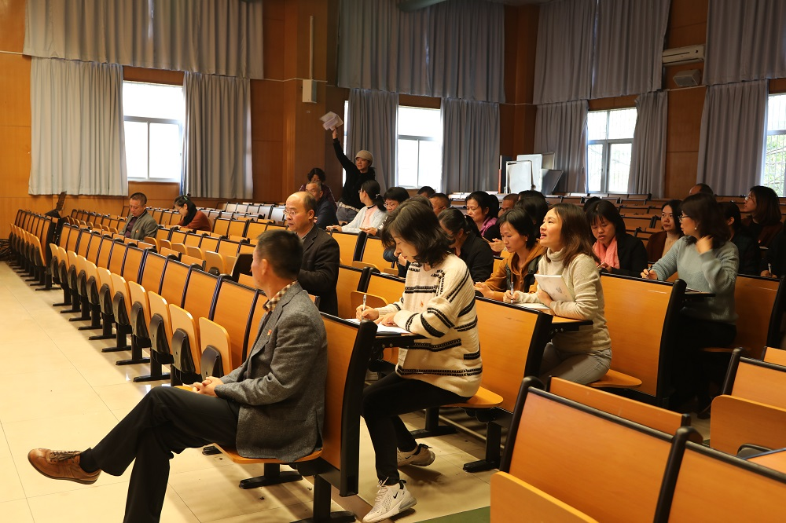

暨学习贯彻党的十九届四中全会精神、专题组织生活会及民主评议党员工作
12月10日下午，蒲城县北关小学-蒲城县桥山中学党支部召开了“不忘初心、牢记使命”主题教育暨学习贯彻党的十九届四中全会精神、专题组织生活会及民主评议党员会议。全体党员参加了会议。

会议第一项：党支部书记张也同志组织全体党员学习党的十九届四中全会重要会议精神。
张也同志从实际出发，强调全体党员同志要认真学习贯彻十九大四中全会精神，不忘教育初心、牢记教育使命，做优秀的党员教师。
会议第二项：召开“不忘初心、牢记使命”专题组织生活会
张也书记对党支部过去一年的活动情况进行总结，重点归纳了四个方面：一是全体党员不断加强理论学习，通过集体学、自主学、交流讨论、观看视频等学习方式，政治理论素养等得到普遍提高。二是全体党员教师坚持立足岗位、扎实工作，在教育教学以及专业发展方面，发挥模范引领作用。三是全体党员文明城市创建、垃圾分类等工作中，发挥了积极的示范带头作用。四是党支部的“书记项目”扎实开展，取得了较好的成效。张也同志要求全体党员教师，继续加强理论学习，提高思想觉悟，不断改进工作方法，勇于担当，主动作为，充分发挥党员同志的先锋模范作用。
会议第三项：民主评议党员。全体党员分为三个党小组进行评议。会议气氛轻松、和谐，充分体现了党内民主，增强了党内同志的交流。
党员同志对自己一年来的思想、工作等方面，进行了批评与自我批评，深刻地剖析自身存在的问题，提出了具体改进措施。党员同志都能客观、公正的分析自身不足，剖析问题符合自身实际，问题查找准确，整改措施切实可行。
随后，进行了民主测评。根据测评、经党支委讨论，评出优秀党员11名，合格党员23名。
党员们一致表示，此次会议一方面总结了自己的成绩，也看到了自己的不足，进一步强化了党员意识，经受了一次严肃的党内政治生活锻炼，有效提高了党性修养。
撰稿：黄少玲
配图：杨思熠
摄影：魏雪剑